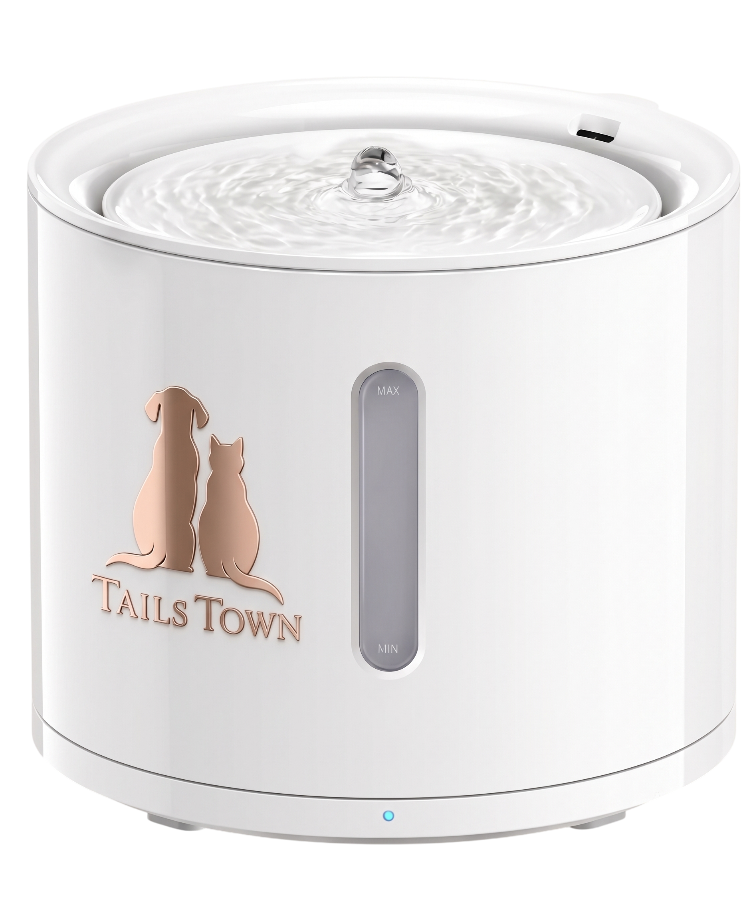

Fresh hydration
Water Fountain
A gentle filtered flow for cats, small dogs, and shared pet corners. Low-splash edges keep the floor calmer while the water stays inviting.

fresh filtered flow low splash edge visible water levelThe everyday difference
Fresh water that keeps the corner feeling calm.
A visible, gentle flow makes hydration feel inviting while thoughtful edges keep the surrounding floor and furniture feeling considered.
Filtered, moving water+
Steady circulation keeps the water feeling fresh and interesting throughout the day.
Low-splash basin+
A thoughtful lip helps keep enthusiastic drinks from turning into a floor clean-up.
Level at a glance+
The open form makes it easy to see when the fountain needs a quick refill.
Why homes choose it
93% more inviting hydration
85% less splash around the bowl
79% easier water checks
Designed around the small signals that help pets drink well every day.
Inside the design
Fresh flow, quietly revealed.
flow arch
filter core
water window
low-splash basin